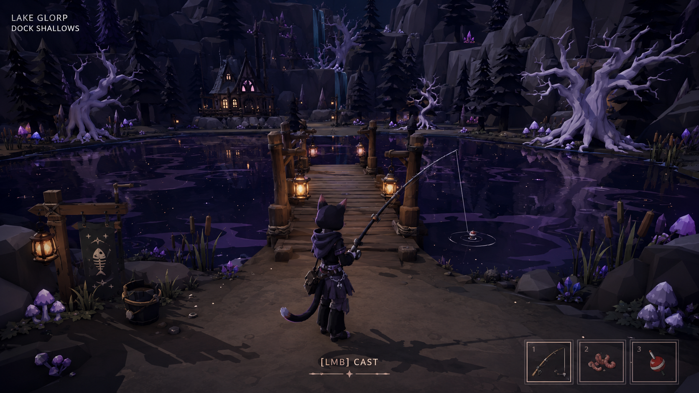
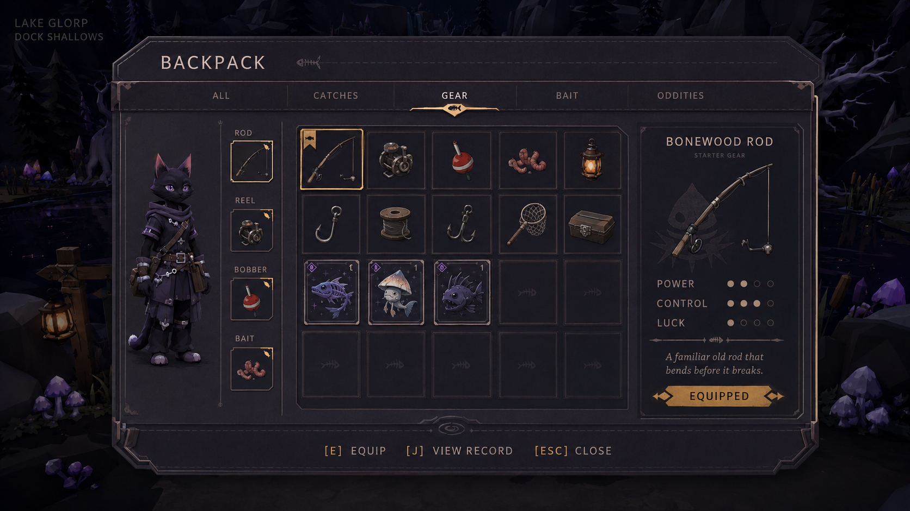
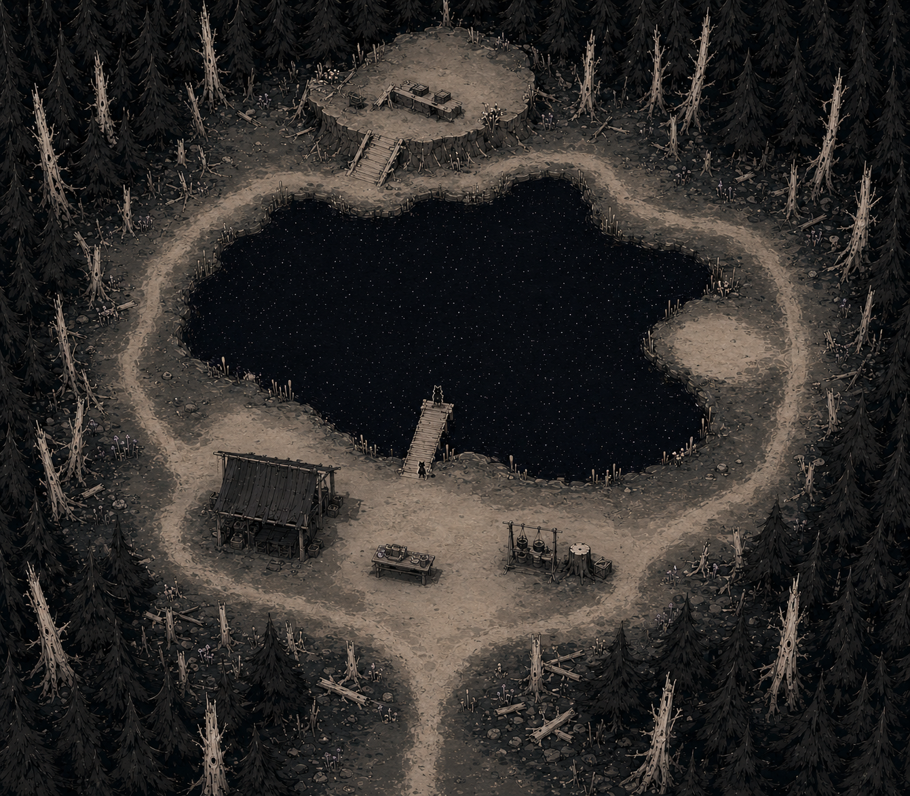
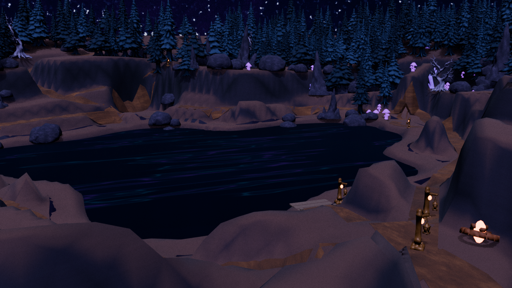
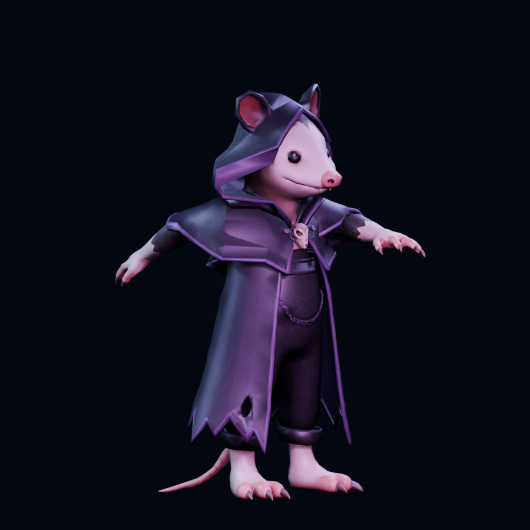
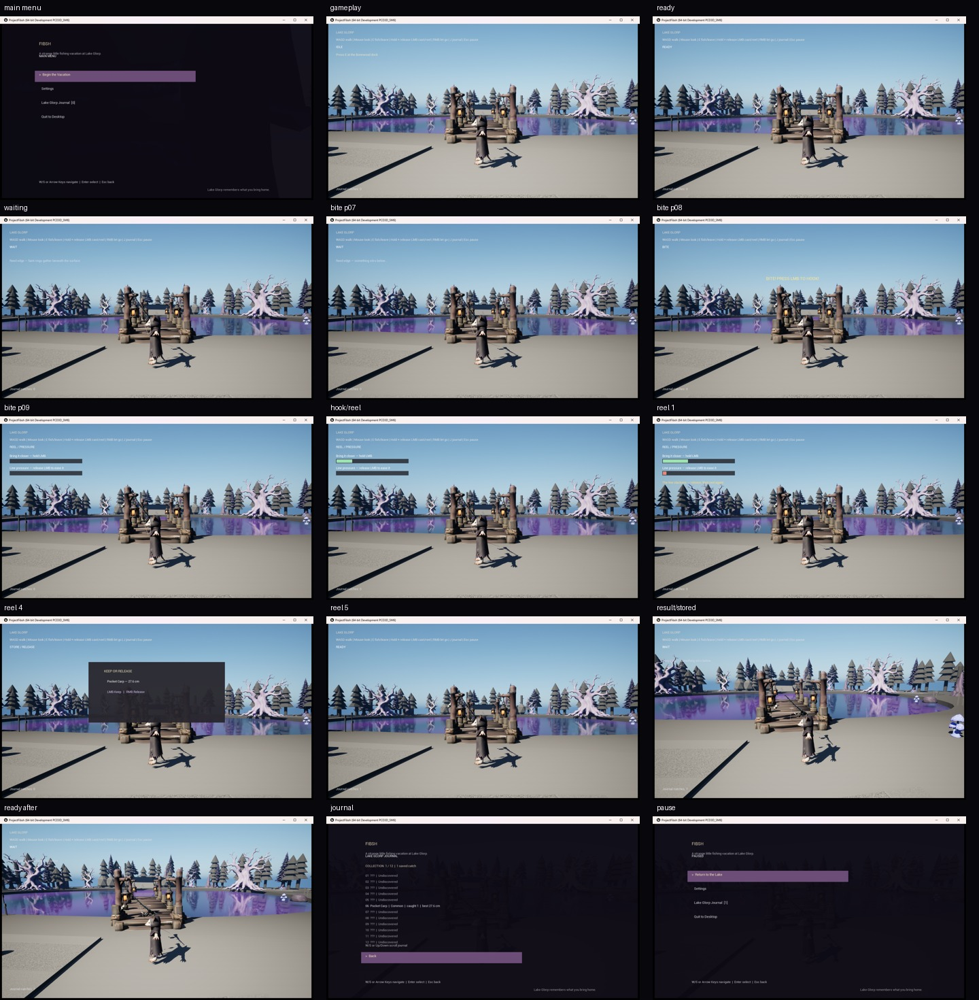

Product And Ship-State Intent
Canonical documents establish the current goal, accepted scope, known evidence, ranked risks, and next approved action.
Game Design Portfolio
Professional contribution plus original WIP design work
Design intent made testable, readable, and easier to iterate.
This page combines public-safe professional design contributions with selected evidence from the current Project Fibsh prototype. Concept boards, Blender results, packaged Unreal captures, and team contributions are labeled by what they actually represent.
Hero image: approved, human-reviewed Fibsh visual direction concept. It is not an in-engine screenshot.
Design Lens
What is the player trying to do, what changed, and what feedback makes the result understandable?
Which system owns the decision, reward, progression, presentation, and persistent state?
What did a playtest, PIE check, or implementation review reveal, and what should change next?
Professional Design Contribution
Public-safe team contribution across two milestones. Proprietary requirements, tuning, implementation details, and team-authored assets remain private.
I contributed directly to quest and world-event design while working with Narrative Design, with team-authored details kept private.
I designed equipment recipes and considered how ingredients, progression, rewards, supporting data, and player expectations connected.
I helped translate system goals and item behavior into testable requirements, then used playtest findings and cross-discipline review to support iteration.
These are team contributions, not claims of sole ownership. I was preparing to transition formally into design when the unexpected studio closure interrupted that path.
Current WIP Design
Project Fibsh is my current private WIP Unreal game project about a city cat's strange fishing vacation at Lake Glorp. The public design evidence shows how that premise becomes scoped systems, spatial concepts, Blender work, playable iteration, and validation-informed decisions.
Canonical documents establish the current goal, accepted scope, known evidence, ranked risks, and next approved action.
A scoped gameplay transaction received follow-up UX and persistence fixes without being presented as finished gameplay.
Persistence checks review whether durable player progress remains understandable after quit and relaunch.
Build success, automated checks, deterministic validation, and human usability review remain distinct signals before owner approval.
Project Fibsh Visual Evidence
These selected artifacts show the current project from intent through implementation. Concept work is marked as concept work. Blender and Unreal captures are marked separately so visual targets are not confused with the current playable WIP.

A human-reviewed target for the protagonist silhouette, Lake Glorp mood, fishing posture, and cast-ready readability. Concept-only, not current gameplay footage.

A visual target for city-cat identity, fishing equipment, catch presentation, and a compact inventory hierarchy. It guides implementation without claiming the screen is already in-engine.

The orthographic concept supports decisions about the dock approach, shoreline loop, central fishing focus, readable landmarks, and supporting activity spaces.

An agent-assisted, human-reviewed Blender pass used to test terrain tiers, shoreline shape, dock approach, lighting anchors, and camera coverage before Unreal review.

A rig stress render used to inspect deformation and fishing-pose range. Parry is a WIP validation character, not the final player identity.

A real packaged-build contact sheet covering menu, movement, cast, wait, bite, reel, result, journal, and pause states. It is functional validation, not release-quality presentation.
Only selected flat images and public-safe summaries are published. Blender source, Unreal project content, packaged builds, credentials, commercial plans, and unreleased production records remain private.
Design Process
Evidence
Public-safe premise, selected visual development, concrete validation milestones, current limits, and private-source boundaries.
View project summaryWriter controls, isolated build generations, separate automated and human checks, ranked defects, and owner-gated decisions.
Review workflowDetailed system responsibilities, contribution boundaries, visual evidence labels, and design-to-validation reasoning.
View on GitHub{kind=link}
{kind=link}
{kind=link}
{kind=link}
{kind=link}
{kind=link}